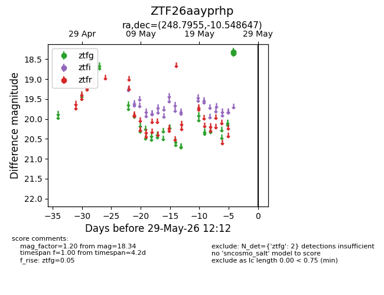
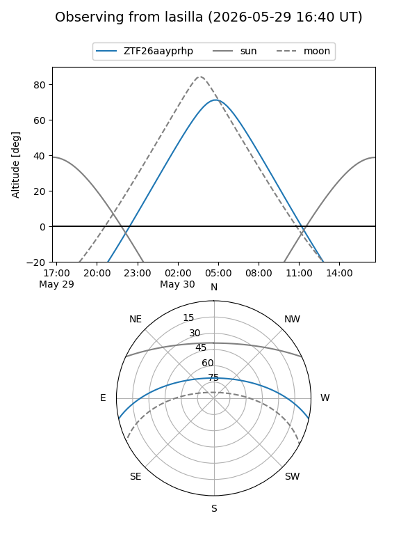
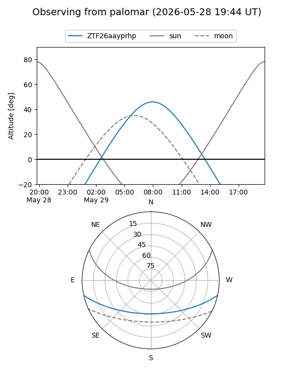

ZTF26aayprhp
Target ZTF26aayprhp at 2026-05-29 12:16
Aliases and brokers:
lsst-FINK: link
lsst-Lasair: link
lsst-ALeRCE: link
ztf-FINK: link
ztf-Lasair: link
ztf-ALeRCE: link
alt names
ZTF26aayprhp (ztf,fink_ztf)
Coordinates:
equatorial (ra, dec) = 248.7955,-10.54865
equatorial (HMS+DMS) = 16:35:10.91,-10:32:55.13
galactic (l, b) = (5.9847,+23.99125)
Flags:
Photometry:
last ztfg=18.34
2 ztfg detections
Lightcurve

Visibility


Additional plots